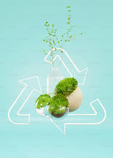
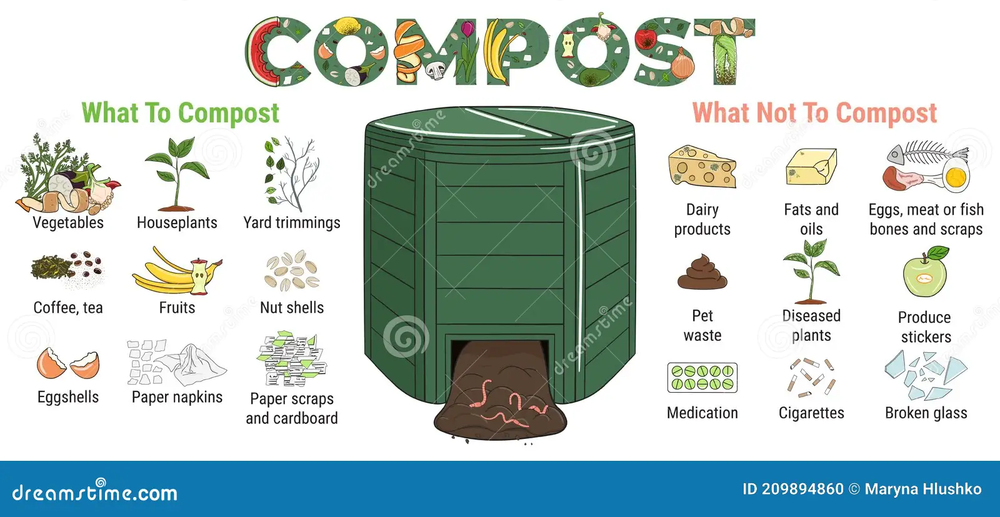

Welcome to Sustainable Living
Learn how to live a more eco-friendly life with our tips, projects, and resources.
1) What is Sustainable Living
A more thoughtful way of living that aims to preserve rather than deplete the Earth's precious resources like water, energy, trees, and fossil fuels. Put succinctly, it is choosing to respect our precious natural systems, as well as people, rather than abusing and exploiting them.
Tips for Sustainable Living
- Reduce, reuse, recycle
- Use renewable energy sources
- Conserve water
- Grow your own food
Sustainable Projects
Build a Compost Bin
Composting is a great way to recycle organic waste and enrich your garden soil.
A compost bin is a structure designed to harnesses the natural process of decomposition by turning organic matter (such as fruit and vegetable wastes, grass clippings, leaves, and some types of animal manure) into a useful product for your landscape or garden.
Install Solar Panels
Reduce your carbon footprint by generating your own electricity with solar panels.
Solar technologies convert sunlight into electrical energy either through photovoltaic (PV) panels or through mirrors that concentrate solar radiation. This energy can be used to generate electricity or be stored in batteries or thermal storage.

Resources
Explore more about sustainable living with these resources.